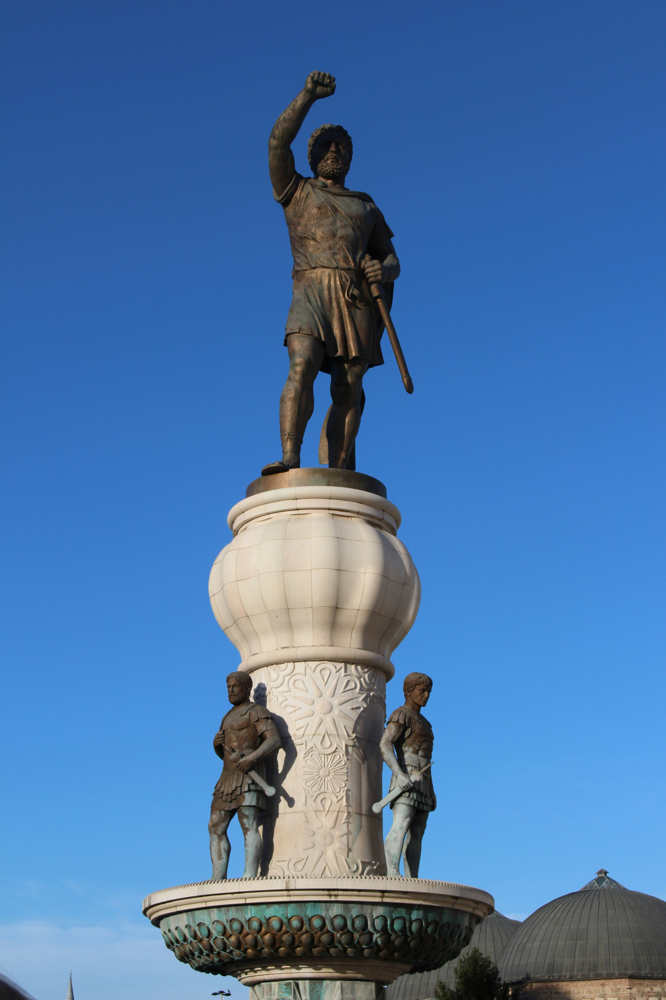

Macedonia is a landlocked country in Southeast Europe on the Balkan Peninsula, known for its rich history and cultural mix influenced by Slavic, Ottoman, and Balkan traditions. Its flag features a stylized yellow sun with eight rays extending to the edges on a red background, symbolizing freedom and continuity. The country's topography is mostly mountainous, with valleys and plains such as the Vardar River basin, and it is home to Lake Ohrid, one of Europe's oldest and deepest lakes. Macedonian cuisine is hearty and Mediterranean-Balkan in style, featuring dishes like tavče gravče (baked beans), ajvar (pepper spread), grilled meats, fresh vegetables, and bread. The official language is Macedonian, a South Slavic language written in Cyrillic, while Albanian is also widely spoken and co-official in many areas. North Macedonia has a population of roughly 1.8 million people, with ethnic Macedonians forming the majority alongside significant Albanian, Turkish, Roma, and Serbian communities.
The region of modern Macedonia has a long and complex history shaped by successive civilizations and empires. In antiquity, the area was part of the ancient Macedonian kingdom and later fell under Roman and Byzantine rule, becoming an important crossroads of trade and culture in the Balkans. During the medieval period, the territory was contested between the Byzantine Empire and the Bulgarian and Serbian medieval states, leaving a strong legacy of Orthodox Christianity, monasteries, and Slavic literacy. In the late 14th century, the region was conquered by the Ottoman Empire, under which it remained for nearly five centuries; this period significantly influenced local culture, architecture, and demographics. In the 20th century, the region was incorporated into the Kingdom of Yugoslavia after World War I and later became a socialist republic within Yugoslavia following World War II, during which it experienced occupation and resistance. With the breakup of Yugoslavia in the early 1990s, Macedonia declared independence peacefully in 1991, emerging as a sovereign state.
Ohrid is North Macedonia's most important tourist destination, renowned for its natural beauty, historical significance, and cultural heritage. Located on the shores of Lake Ohrid, one of Europe's oldest lakes, the city is famous for its medieval churches, monasteries, and well-preserved old town, earning it UNESCO World Heritage status. Ohrid is also historically significant as a major center of Slavic literacy, closely associated with Saint Clement of Ohrid, where the foundations of the Cyrillic alphabet were developed and spread throughout the Slavic world, making the city a lasting symbol of education, religion, and culture in the Balkans.